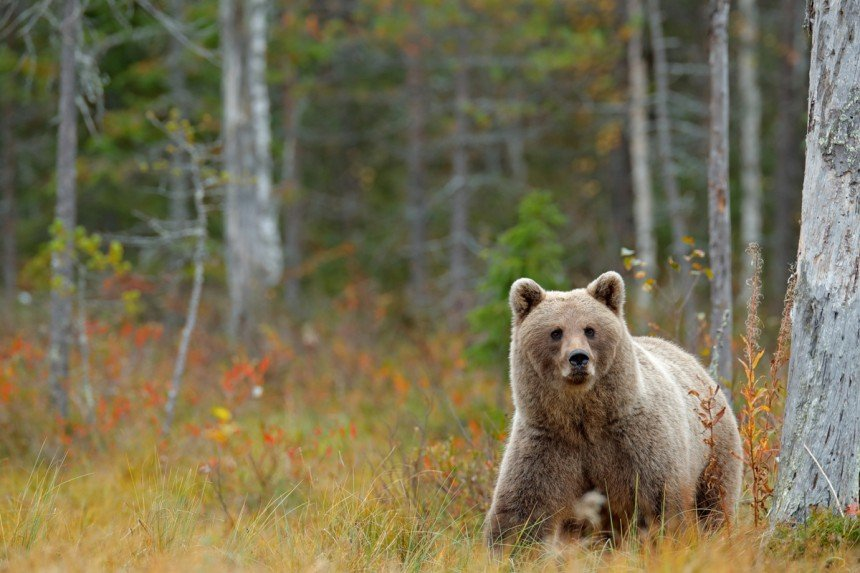
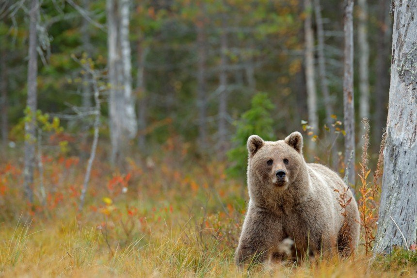

Perustietoja:
- Asukasmäärä(2020) n. 5,54 milj
- Valuutta: Euro
- Pinta-ala: n. 338 465 km²
- Presidentti: Sauli Niinistö
- Pääministeri: Sanna Marin
- Pääkaupunki: Helsinki
- Viralliset kielet: Suomi ja Ruotsi
- Itsenäisyyspäivä: 6.12
- Suuntanumero: +358
- BKT [2016]: 238,6 miljardia USD
- Aikavyöhyke: UTC+2/UTC+3
- Mediaani-ikä: 43 vuotta
Ruoka kulttuuri
Suomalainen arkiruoka muistuttaa muiden teollisuusmaiden ruokailuperinteitä.
Arkisissa aterioissa on yleensä vain pääruoka, joskus jälkiruoka, muttei juuri ikinä alkupaloja.
Ruoan ja ruoka-aineiden kotimaisuus on Suomessa tärkeä asia.
Kaikesta Suomessa syötävästä ruoasta noin 84 prosenttia on valmistettu Suomessa, ja tämän ruoan
raaka-aineista noin 78 prosenttia on kotimaista.
Perinteisiä suomalaisia ruokia
- Kalakukko
- Poronkäristys
- Karjalanpiirakat
- Mämmi
- Mustamakkara
Suomalaisista ruokaperinteistä ehkä oudoimmalta saattaa kuulostaa mämmi, sillä monet ulkomailta suomeen tulevat matkailijat ovat sanoneet että heitä on kehotettu maistamaan mämmiä, vaikka sen ulkonäkö ja koostumus saavat sen vaikkuttamaan syömäkelvottomalta
Luonto:
Eläinmaantieteellisesti Suomi kuuluu palearktiseen alueeseen, jonka eläimistö on tyypillistä pohjoiselle havumetsävyöhykkeelle. Nisäkkäitä on yli 60 lajia, joista yksi yleisimmistä on orava, metsäjänis ja peura. Suurista nisäkäslajeista karhu, susi ja hirvi. Lintulajeja on laskettu noin 470, joista suurin osa on muuttolintuja. Kalalajeja on yli 60, matelijoita viisi ja sammakkoeläinlajeja 3–4.
Suomen luonto koostuu pääasiassa metsätalousmetsistä, järvistä sekä ihmisen vaikutuksen voimakkaimmin muokkaamista viljelmistä ja kaupunkiluonnosta. Lähes luonnollisia metsiä ja soita on luonnonpuistoissa, jotka on tarkoitettu tutkimuskäyttöön ja suojeltavaksi. Erilaisilla suojelualueilla on metsätalouskäytöltä rauhoitettuja metsiä ja soita. Näitä, samoin kuin monia talousmetsiin kuuluvia alueita käytetään myös virkistysalueina. Suomen pinta-alasta 78% on metsän peitossa. Tyypillisesti metsä on sekametsää, jossa havupuut ovat vallitsevia.
Suomella on merenrantaa Pohjanlahdella, Suomenlahdella ja Saaristomerellä. Merialueet ovat matalia, ja
vesialueet saariston pilkkomia. Vesi on murtovettä, joten varsinaisia valtamerilajeja tavataan vain
harhailijoina.
Suomi tunnetaan tuhansien järvien maana. Suomen pinta-alasta vesistöjä onkin 10 prosenttia. Varsinaisten
järvien lisäksi on monenlaisia pienvesiä: lampia, lampareita, puroja, lähteitä ja allikoita. Järvet ovat
matalia ja vähävetisiä. Karuissa ja ravinteikkaissa sisävesissä elää omat lajistonsa.
 
